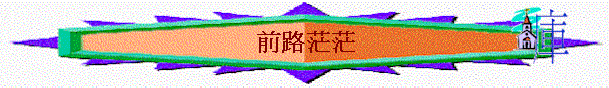

想起「前路」，就記起自己以往一個人遠足探路的日子，有不少次真不知道「前路」如何走，「明明手上的地圖是有此路，但怎麼不見了？卻面對茫茫大海！」「前面有兩條路，究竟向左行，還是右行呢？」「村內有惡犬，是否繼續上路？」
相信很多香港的基督徒和世人一樣，也要面對前路重重障礙的問題。畢業後是否能找到工作？可否繼續升學？公司會否裁員？仍未找到工作，怎辦？基督徒仍可能會面對失學、失業的困境。
聖經記載大衛的人生同樣面對很多「前路」與「失去」的問題！他被掃羅及他的兒子追殺，要走逃亡的路，或向左或向右呢？他曾經失去官職，失去妻子，失去安居之所，失去尊重，失去親情，失去兒子，晚年更失去強健的身體，他又如何面對？詩37篇是大衛所寫的詩，充份反映他面對惡人、面對惡劣的環境如何自處，讓我們仔細留意幾節經文。
一.
面對軟弱
「你當倚靠耶和華而行善......」詩37:3上
認識一位作團契職員的肢體，當他畢業後，仍未找到工作，整個人也改變起來，變得很軟弱，放下一切的事奉，將自己收藏於家中，不想與人溝通，整年在家中過著頽廢的生活。的確，有時逆境會令人變得軟弱無力，從前以為善、以為好的事，都會拋於腦後，自暴自棄。大衛也可以，他從前靠神爭戰，大發熱心，何等愛主！但為何落得要走到逃亡的路？自己也顧不了，倒不如停止事奉，停止行善吧！但他在絕望中仍沒有忘記神，仍善待他的仇敵，仍可以有力行善，秘訣在哪裡？是他能「靠耶和華」，不是靠自己，是靠那位加他力量的神，可以仍持守純正，可以仍有力行神眼中看為正的事。我們需要效法大衛，失業不等於停止事奉，停止親近神，停止關心人；失學仍可靠神，繼續作義工，作和平之子，作君尊的祭司，生活仍可過得有意義的！不要給魔鬼留地步，使我們像「爛泥」，像「閒懶的人」，我們仍可站穩，靠主仍可有力。
二. 面對缺乏
「住在地上以祂的信實為糧」詩37:3下
另一個問題要面對是經濟，「又要供樓，父母又失業，整個家庭全倚靠我，怎辦？」我認識一位神學院的師長，他一生面對很多經濟的難關。有一次，他預備去另一個地區迎娶未婚妻，但途中遇到土匪，將他一生的家財奪去，怎辦？另一次，他到雲南傳道，但去到一個極窮困的光景，米糧已沒有，如何面對明天？但每一次，他以神的信實為糧，仍相信「耶和華是他的牧者」，每一次竟然也可安然經過。還有很多類似的經歷，最後神也供應，也有保守。我們今天又以甚麼為糧呢？以「地上眼前的光景」為糧？以「現實艱難」為糧？還是以「神的信實」為糧呢？我們試想想，信主這麼多年，神何時欺騙我們？何時失信於我們呢？若將我們的眼目仰望祂的信實，必使我們終得飽足。
三.
面對憂悶
「又要以耶和華為樂......」詩37:4
「多次的見工失敗」、「多次的被裁員」，的確令一個滿有雄心壯志的人感到意志消沉。若時常留在家中，每天所望的是家中死氣沉沉的牆壁，「憂悶」、「心懷不平」就會從心裡湧出來，若偶然有人不厭其煩的詢問（其實可能是關心），心中的「情緒」就會一發不可收拾的湧現。但聖經卻說：「要以耶和華為樂」，原來，在難處中仍可快樂，這快樂不是普通的快樂，而是世人沒有的，可以「以神為樂」！
有一位弟兄，他十五歲時就跌傷了背脊骨，躺在病榻上已四十年之久，稍一轉動就感到劇痛，在人眼中他一生失去了活動能力，理應感到很不快樂，但探訪他的人卻發現他的臉容閃耀著天上的榮光，他口中沒有怨言，而且常常流露著喜樂，為何可以？因他在難處中仍感受到神的恩典，他就像神所寵愛的兒女一樣，他真能做到以神為樂。的確，若我們不是單想自己所失去，而是想今天我所擁有，即或我失去所有東西，但單單有神，有一位最大、最寶貴的神，我們可以有一種以神為樂、超凡的喜樂。
四.
面對時間
「你當默然倚靠耶和華，耐性等候祂......」詩37:7
時間對於長跑選手來說是一個挑戰，「幾時可以跑完？」「幾時可以到終點？」對一個等候轉機、等候消息、等候結果的基督徒，也是一件不容易面對的事，當「一個月」、「二個月」、「半年」、「一年」仍是這樣時，我們的信心會開始動搖，失望又會再升起。我的一個親人也曾經失業，有差不多一年時間，看著他每天在家中等待的樣子，也替他擔心，但神卻叫我們「默然倚靠祂，耐性等候祂」，神有祂的時候，祂知道哪段時候有結果對我們是最好的。
在神學裝備階段，很喜歡觀賞神學院的蘭花，它不是時常盛放，可能半年，可能一年開花一次，每次開花的時間很短，二、三小時就會自然將花瓣收起來，但就因為「要等」、「不知幾時開花」，吸引了同學的留意，這就是它的獨特性。神秘令人有意外的驚喜，當開花的日子，真叫人雀躍！若沒有等候，若知道何時花會開，就沒有「忽然」、「等候」、「期待」、「突然」、「難忘」的時刻。神有時要我們等待，摩西要等待四十年，才能帶領選民出埃及；保羅在阿拉伯曠野等待三年，才為主打美好的仗；我們的主在世也要等待三十三年，才走上十架的路，神的意念、神的時間是對我們好的，只管默然耐性等候祂。當事成回頭再看，才發現這等待的確十分「獨特」，這等待的確十分「美麗」，原來是這麼好的！
最後，聖經又說：「當將你的事交託耶和華，並倚靠祂，祂就必成全」。人生有太多事情要面對，昨天面對「非典型」，今天面對「供樓」，明天又不知面對甚麼，但我們卻可以將一切事交託神，神必負責任的！願我們對那位從不失信的主，有更大的信心，繼續面對人生不同的挑戰！